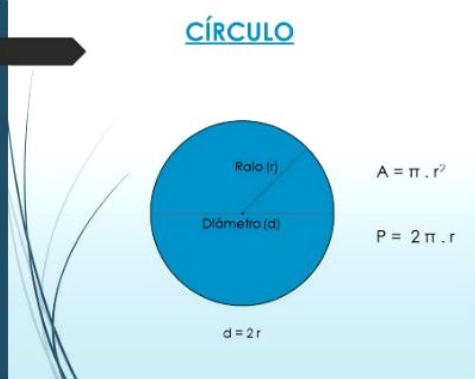

Matemática
Habilidades
EMT3MAT101: Propor ou participar de ações adequadas às demandas da região preferencialmente para sua comunidade, envolvendo medições e cálculos de perímetro de área, de volume, de capacidade ou de massa.
EMT3MAT102: Planejar e executar pesquisa amostral sobre questões relevantes, usando dados coletados diretamente ou em diferentes fontes, e comunicar os resultados por meio de relatório contendo gráficos e interpretação das medidas de tendência central e das medidas de dispersão, amplitude e desvio padrão).
EMT3MAT103: Aplicar conceitos matemáticos no planejamento, na execução e na análise de ações envolvendo a utilização de aplicativos e a criação de planilhas (para o controle de orçamento familiar, simuladores de cálculos de juros simples e compostos, entre outros), para tomar decisões.
EMT3MAT104: Construir e interpretar tabelas e gráficos de frequências, com base em dados obtidos em pesquisas. incluindo ou não o uso de softwares que inter-relacionem estatísticas, geometria e álgebra.
EMT3MAT105: Interpretar e comparar conjuntos de dados estatísticos por meio de diferentes diagramas e gráficos, reconhecendo os mais eficientes para sua análise relacionando as diversas áreas do conhecimento.
EMT3MAT106: Desenvolver conceitos da geometria plana e da geometria espacial para realizar cálculos e análises. de aplicações em situações reais levando em consideração aspectos culturais da matemática relacionando as diversas áreas do conhecimento.
EMT3MAT107: Investigar a deformação de ângulos e áreas provocada pelas diferentes projeções usadas em cartografia (como a cilíndrica e a cônica), com ou sem suporte de tecnologia digital.
EMT3MAT108: Desenvolver situações que propiciem a interpretação e resolução de problemas que envolvam a formação do pensamento probabilístico recorrendo estratégias diversas.
EMT3MAT201: Investigar relações entre números expressos em tabelas para representá-los no plano cartesiano, identificando padrões e criando conjecturas para generalizar e expressar algebricamente essa generalização, reconhecendo quando as representações se referem aos diversos tipos de funções matemáticas.
EMT3MAT202: Investigar pontos de máximo ou de mínimo de funções quadráticas em contextos envolvendo superfícies, Matemática Financeira ou Cinemática, entre outros, com apoio de tecnologias digitais.
EMT3MAT203: Representar graficamente a variação da área e do perímetro de um polígono regular quando os comprimentos de seus lados variam, analisando e classificando as funções envolvidas.
EMT3MA204: Investigar conjuntos de dados relativos ao comportamento de duas variáveis numéricas, usando ou não tecnologias da informação, e, quando apropriado, levar em conta a variação e utilizar uma reta para descrever a relação observada.
EMT3MAT205: Investigar processos de obtenção da medida do volume de prismas. pirâmides. cilindros e cones. para a obtenção das fórmulas de cálculo da medida do volume dessas figuras.
Competências
Propor ou participar de ações para investigar desafios do contemporâneo e tomar decisões éticas e socialmente responsáveis, com base na análise de problemas sociais, como os voltados a situações de saúde, sustentabilidade, das implicações da tecnologia no mundo do trabalho, entre outros, mobilizando e articulando conceitos, procedimentos e linguagens próprios da Matemática.
Áreas e Perímetros
Área: equivale a medida da superfície de uma figura geométrica. Perímetro: soma das medidas de todos os lados de uma figura. Geralmente, para encontrar a área de uma figura basta multiplicar a base (b) pela altura (h). Já o perímetro é a soma dos segmentos de retas que formam a figura, chamados de lados (l). Para encontrar esses valores é importante analisar a forma da figura. Assim, se vamos encontrar o perímetro de um triângulo, somamos as medidas dos três lados. Se a figura for um quadrado somamos as medidas dos quatro lados. Na Geometria Espacial, que inclui os objetos tridimensionais, temos o conceito de área (área da base, área da lateral, área total) e o de volume. O volume é determinado pela multiplicação da altura pela largura e pelo comprimento. Note que as figuras planas não possuem volume. Triângulo: figura fechada e plana formado por três lados.
Retângulo: figura fechada e plana formada por quatro lados. Dois deles são congruentes e os outros dois também.
Quadrado: figura fechada e plana formada por quatro lados congruentes (possuem a mesma medida).
Círculo: figura plana e fechada limitada por uma linha curva chamada de circunferência.
Trapézio: figura plana e fechada que possui dois lados e bases paralelas, onde uma é maior e outra menor.
Losango: figura plana e fechada composta de quatro lados. Essa figura apresenta lados e ângulos opostos congruentes e paralelos.
Princípio de Cavallieri
"O princípio de Cavalieri foi desenvolvido na intenção de compreender melhor as medidas de volume. O cálculo de volumes nem sempre foi uma tarefa fácil, mas, com o princípio de Cavalieri, foi possível desenvolver fórmulas aplicáveis a vários sólidos geométricos a partir da comparação com o prisma ou cilindro. Cavalieri percebeu que, dados dois sólidos com a mesma altura, se todas as secções paralelas ao plano em que esses sólidos estão apoiados formam figuras planas de área igual, então o volume desses sólidos é o mesmo."
Semelhança de Triângulos
Dois triângulos são semelhantes quando possuem os três ângulos ordenadamente congruentes (mesma medida) e os lados correspondentes proporcionais. Usamos o símbolo ~ para indicar que dois triângulos são semelhantes. Para saber quais são os lados proporcionais, primeiro devemos identificar os ângulos de mesma medida. Os lados homólogos (correspondentes) serão os lados opostos a esses ângulos.
Probabilidade
Probabilidade é um ramo da Matemática em que as chances de ocorrência de experimentos são calculadas. É por meio de uma probabilidade, por exemplo, que podemos saber desde a chance de obter cara ou coroa no lançamento de uma moeda até a chance de erro em pesquisas. Para compreender esse ramo, é extremamente importante conhecer suas definições mais básicas, como a fórmula para o cálculo de probabilidades em espaços amostrais equiprováveis, probabilidade da união de dois eventos, probabilidade do evento complementar etc.